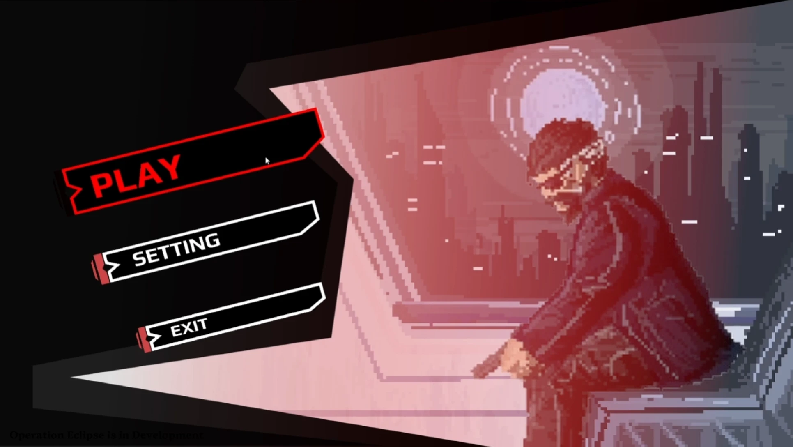
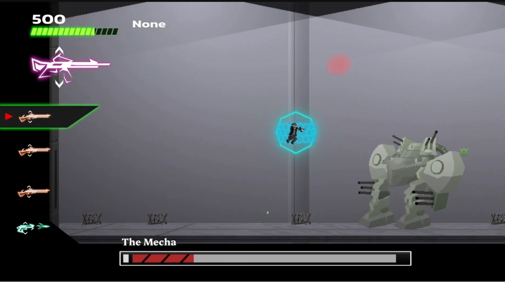
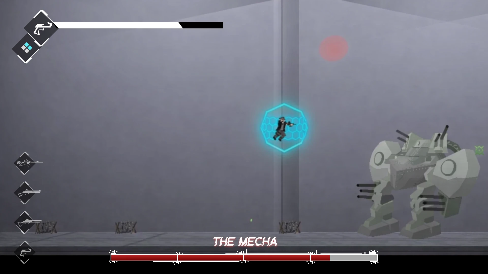
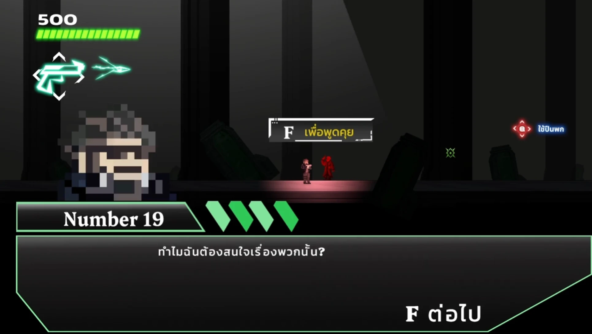
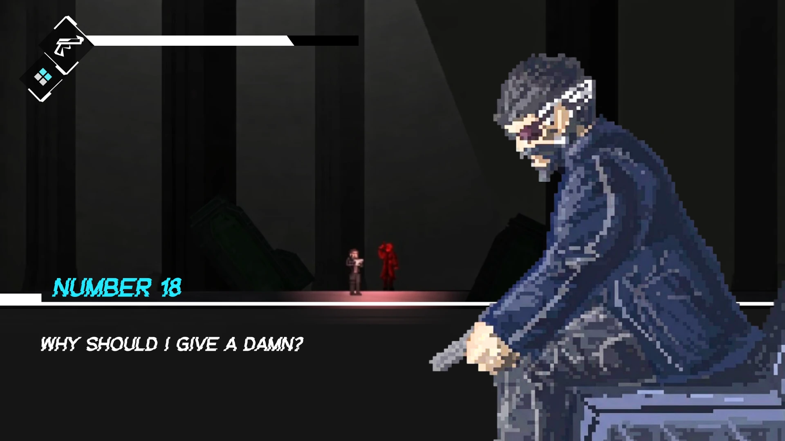

โปรเจ็คนี้เป็นการนำ UI ของเกม Operation Eclipse ที่เคยทำก่อนหน้ามา Redesign ใหม่ทั้งหมด เนื่องจาก UI เดิมถูกออกแบบภายใต้ข้อจำกัดด้านเวลาและทีมที่เล็ก ทำให้ไม่ได้เน้นเรื่องความสวยงามและ Usability โปรเจ็คนี้จึงเป็นการแก้ไขปัญหาเหล่านั้นด้วยหลัก UX/UI Design
ปัญหาเดิม:
ภาพรวมของ UIไม่ไปทิศทางเดียวกัน เพราะไม่มีการวางแผนเกี่ยวกับการกำหนดTheme ของUI ทำให้รู้สึกว่าUIกับภาพพื้นหลังมันไม่สามารถสื่อสารให้คนเล่นเข้าใจได้ว่าคือเกมแบบไหน การใช้สีดำที่มากไป ในส่วนของUIและพื้นหลัง
สิ่งที่ปรับปรุง:
กำหนดTheme เป็น Futuristic UI เนื่องจากเกมมีธีมยุคอนาคต เปลี่ยน Fontให้ตรงกับธีมเกม โดยใช้ฟอนต์ที่มีGlitch จัดเรียงตำแหน่งUIให้ดูง่ายโดยใช้ Layout Grid และใช้Visual hierarchy

BEFORE
AFTER
ปัญหาเดิม:
UI ไม่ไปทิศทางเดียวกัน Layoutทางซ้ายที่ดูอีดอัด ส่วนของGameplay เรามีระบบที่ต้องสลับปืนตามเงื่อนไข ที่กำหนดถ้าผู้เล่นทำได้จะได้รับสกิลพิเศษ UI ส่วนนี้คือปัญหาถ้าตัวละครอยู่ทางขวาและบอสอยู่ทางซ้าย Uiส่วนนี้มีขนาดใหญ่ทำให้ผู้เล่นมองไม่เห็นการโจมตีของบอส เนื่องจากUiมีการบดบังบอส
สิ่งที่ปรับปรุง:
ผมเลือกแก้ไขไปที่ UI แสดงอาวุธที่คอมโบโดยปรับขนาดให้เล็กลงและปรับOpacityไม่ให้Uiมันเด่นจนบดบังฉากภายในเกม ปรับส่วน HPbarของBoss เพื่อให้ผู้เล่นสามารถประเมินว่าบอสมีเลือดเหลืออยู่เท่าไหร่และจะPhase 2ตอนไหน UI HpbarและWeapon นำมารวมกันให้เป็น Futuristic UIที่มีContrastที่สูง เพิ่มUI ที่ทำหน้าที่บอกว่าสามารถใช้สกิลของอาวุธได้ โดยมีไอเดียทำเป็นช่องสี่เหลี่ยม 4 ช่อง ถ้าเป็นสีฟ้าทั้งหมด หมายความว่าจะสามารถใช้สกิลอาวุธได้

BEFORE
AFTERปัญหาเดิม:
UI ไม่ไปทิศทางเดียวกัน Layoutทางซ้ายที่ดูอีดอัดเพราะมี UI ส่วนใหญ่อัดกันอยู่ UI แต่ล่ะส่วนแย่งกันเด่น ไม่ว่าจะเป็น Hpbar ,Weapon , Dialogue
สิ่งที่ปรับปรุง:
การจัด Layout ผมนำตัวละครไปไว้ทางขวาเพื่อไม่ให้UIดูอึดอัดมากเกินไป UI Dialogue แก้ไขให้ดูง่ายตามหลัก Visual hierarchy ชื่อตัวละครใช้สีฟ้าทำให้เด่นมากขึ้น และส่วนเนื้อหาใช้contrastทำให้อ่านง่าย

BEFORE
AFTERเริ่มจากวิเคราะห์ถึงสไตล์ของเกมว่าต้องการให้Themeเป็นอะไร Art Styleแบบไหน หลังจากนั้นจึงออกแบบLogoใหม่ สีให้สอดคล้องกับThemeของเกม ฟอนต์ทำให้ได้มาเป็น Futuristic UI ที่ใช้Contrastสูงเพื่อให้เนื้อหาอ่านง่ายและมีความเป็นเทคโนโลยีซึ่งสอดคล้องกับเกม ผมได้ศึกษาเกี่ยวกับ UI/UX DesignของเกมแนวPixelartว่าเป็นแบบไหน ตอนแรกผมคิดว่า GamePixelartจำเป็นต้องวาดUiแบบPixelart ทั้งหมดแต่ผมสังเกตเห็นบางเกมก็ไม่ได้ใช้ Uiที่วาดแบบPixelart ทั้งหมดทำให้ความกังวลของผมลดลง ผมจึงตัดสินใจไม่วาดUiแบบPixelartทั้งหมดแต่ผมจะใช้Uiที่วาดแบบPixelartเพื่อให้สอดคล้องกับThemeของเกม ผมเริ่มlistปัญหาUiอันเดิมว่ามีปัญหาอะไรและวิเคราะห์แก้ไขปัญหาเหล่านั้น
ผมได้รู้ว่า UI Designเป็นสิ่งที่ต้องมีความสัมพันธ์กับThemeของเกม เพื่อให้เกิดผู้เล่นเกิด UXที่ดี แต่การทำRedesignของผมก็ยังไม่สมบูรณ์เนื่องจากยังไม่มีการนำไป Implement ให้ใช้จริงและขาดการเก็บFeedbackจากผู้เล่น ตอนนี้Uiที่Redesign เป็นเพียงแค่การทดลองเพื่อให้ผมได้เรียนรู้และพัฒนาทักษะ UI Design